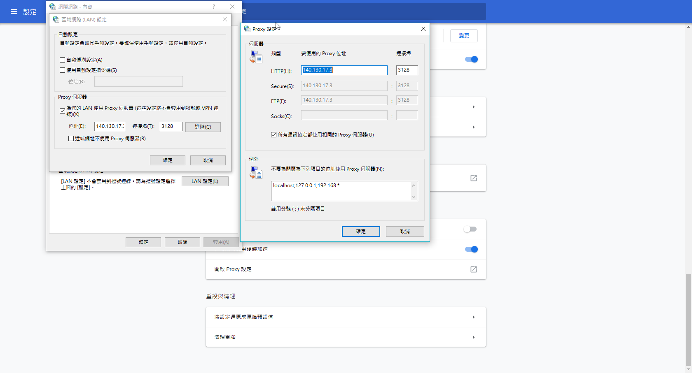
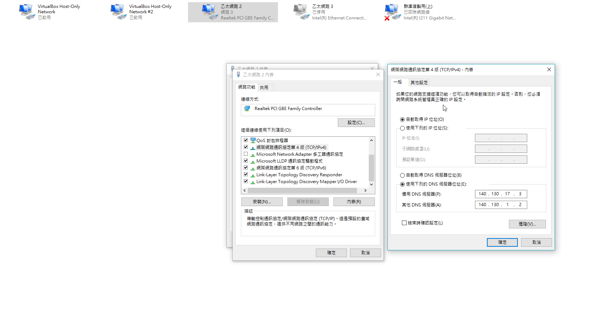

了解機械設計系電腦輔助設計室電腦的網路設定, 其中包括 IPv4 網路與 IPv6 網路設定.正常情況下, 電腦輔助設計室中的 64 台電腦透過 IPv4 協定下的 DHCP 與 NAT 上網, 各電腦以 DHCP client 取得 192.168.1.* 的網路位址, 然後以 NAT 的一組外部 IP 上網, 通常必須設定 Proxy Server 為 http://proxy.kmol.info:3128 後上網會比較順暢, 但若 8 台 Proxy Servers 無法正常運作時, 則取消 Proxy Server 的設定.
瀏覽器代理主機設定
了解如何設定 Google Chrome 與 Firefox 瀏覽器的代理主機設定.
可以利用"命令提示字元"輸入ipconfig"它的主要功用，包括用來顯示現時網路連線的設定（/all參數），或透過/release參數來釋放取得的ip位置，和透過/renew 來重新獲取ip位置的分配。

